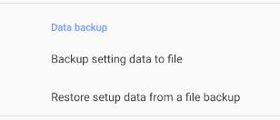

You can use other picture or video apps to open the panorama first. If all other apps can be opened, our app fails,
please give us feedback about this problem.
What if this image format is not supported when panorama is opened?
App does not guarantee that you can open any file format. If you encounter an error that the file format does not
support, we recommend that you use other processing software to convert the image to JPEG format, or convert the video
to MP4 format.
What if the image is too large?
App can't open a very large image (65536x32768), because such a large image will consume the performance of the mobile
phone and take a long time to load, but it is beyond the resolution of the mobile phone, which is not very helpful for
browsing.
therefore, we suggest that you can use PS and other image processing software to zoom the image to about
16384x8192 (it is recommended to save it in JPEG format). This size of image has high definition and can be loaded
quickly.
Why do panoramas have seams?
Please check whether your panorama is a normal 720 degree panorama (the aspect ratio is 2:1), or you may not have the
correct alignment when splicing the panorama.
Why does a local app need network permissions?
In order to check whether the software has been updated, and to send error reports, feedback and other operations to
help improve the function of the software, the app can be run,
That's why I applied for network permission.
we promise that we will not collect your privacy or personal files. you can also disable the networking
function of the software in the mobile system manager, This will not affect the use of app.
How to back up app settings, panorama data and classified favorite data?
You can click "back up setting data to file" in the settings to save and back up the current data and software settings.
After you uninstall and re install app, you can click "restore setting data from file backup" to quickly restore the
previous data.
but note that this backup only backs up the file path, not the file content. If you migrate the data to a new
device, you also need to copy the panoramic file again, otherwise you will not find the path.

Other tips
In order to speed up the panoramic reading, app will turn on the cache by default, which may occupy your storage space.
You can choose to turn it off in the settings (but this may lead to longer loading time),
Or manually clean up the cache in settings to free up storage space.
Note: since all the software data are saved locally, if you uninstall the software or clear the app data in the system
application management, all the image data you imported and the saved classified favorite data will be lost!
Therefore, you can export your data to a file to save in the settings. If you need to restore the previous data, you
only need to import the previously backed up file.